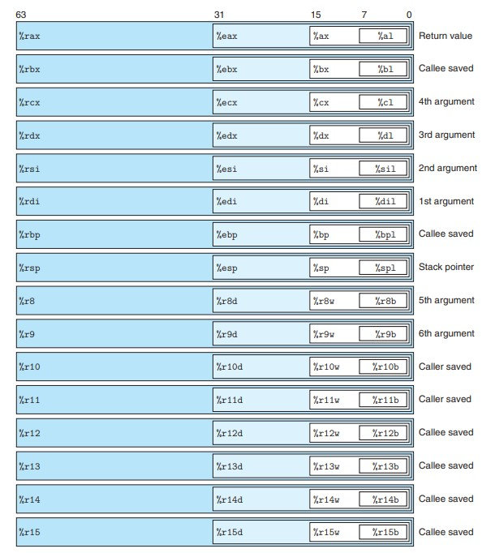

Ⅲ 程序的机器级表示 Machine-Level Representation of Programs
3.1 历史观点 A Historical Perspective
略。
3.2 程序编码 Program Encodings
寄存器
- 程序计数器（PC）：存放下一条将要被执行的指令的地址。（在 x86-64 中用 %rip 表示）
- 整数计数器：存放 64 位的值，一共 16 个。
- 条件码寄存器：存放最近执行的算术或逻辑指令的状态信息。
- 向量寄存器：存放一个或多个整数或浮点数。
3.3 数据格式 Data Formats
数据类型大小

Intel 用术语“字”表示 16 个 bit，称 32 位数为“双字”，称 64 位数为“四字”。
3.4 访问信息 Accessing Information
整数寄存器（通用目的寄存器）

- 对于生成小于 8 字节结果的指令，寄存器中剩余字节有以下规则：生成 1 字节或 2 字节结果的指令会保持剩下的字节不变；生成 4 字节结果的指令会将高 4 位置为 0。
- %rsp 为栈指针，用来指明运行时栈的结束位置。
操作数格式

数据传送指令MOV
作用：把数据从源位置复制到目的位置，不做任何变化，两个位置不能全是内存。
- movb：传送 1 个字节
- movw：传送 2 个字节
- movl：传送 4 个字节
- movq：传送 8 个字节
- movabsq：传送 8 个字节（绝对）
MOV 指令只会更新目的操作数指定的寄存器字节或者内存位置，唯一的例外是 movl 指令以寄存器作为目的时，会将该寄存器的高位全设为 0。
常规的 movq 指令只能以表示为 32 位补码数字的立即数作为源操作数，然后符号扩展为 64 位。但 movabsq 指令能直接以 64 位立即数作为源操作数，并且只能以寄存器为目的。
以下两类 MOV 指令将较小的源值复制到较大的目的。MOVZ 类进行零扩展，MOVS 类指令进行符号扩展。
- movzbw：零扩展，1 个字节到 2 个字节
- movzbl：零扩展，1 个字节到 4 个字节
- movzbq：零扩展，1 个字节到 8 个字节
- movzwl：零扩展，2 个字节到 4 个字节
- movzwq：零扩展，2 个字节到 8 个字节
$~$ - movsbw：符号扩展，1 个字节到 2 个字节
- movsbl：符号扩展，1 个字节到 4 个字节
- movsbq：符号扩展，1 个字节到 8 个字节
- movswl：符号扩展，2 个字节到 4 个字节
- movswq：符号扩展，2 个字节到 8 个字节
- movslq：符号扩展，4 个字节到 8 个字节
- cltq：符号扩展，%eax 到 %rax，无操作数
入栈指令PUSH与出栈指令POP
- pushq $S$：将 8 个字节压入栈（栈指针 -8 并传送数据至内存）
- popq $D$：将 8 个字节弹出栈（栈指针 +8 并传送内存中的对应数据至寄存器$D$）
3.5 算术与逻辑操作 Arithmetic and Logical Operations
地址加载指令leaq
作用：将有效地址写到目的操作数，或者简洁地描述算术操作。
一元和二元操作指令
- INC：自加 1
- DEC：自减 1
- NEG：数值取反
- NOT：按位取反 $~$
- ADD：加
- SUB：减
- IMUL：乘
- XOR：异或
- OR：或
- AND：与
- SAL：左移
- SAR：算术右移
- SHR：逻辑右移
128位操作指令
- imulq $S$：有符号全乘法 第一个 64 位参数存在 %rax 中，另一个为 $S$，乘积的高 64 位存在 %rdx 中，低 64 位存在 %rax 中。
- mulq $S$：无符号全乘法 数据存放位置同 imulq
- idivq $S$：有符号除法 被除数的高 64 位存在 %rdx 中，低 64 位存在 %rax 中，除数为 $S$，商存在 %rax 中，余数存在 %rdx 中。
- divq $S$：无符号除法 数据存放位置同 idivq
- cqto：转换 16 字节，隐含读出 %rax 的符号位，并将它复制到 %rdx 的所有位
3.6 控制 Control
条件码
条件码寄存器各自只有 1 位，描述最近的算数或逻辑操作的属性。除了 leaq 指令以外，其余的算数逻辑操作指令都会设置相应的条件码。
- CE（进位标志）：最近的操作使最高位产生了进位
- ZF（零标志）：最近的操作结果为 0
- SF（符号标志）：最近的操作结果为负数
- OF（溢出标志）：最近的操作导致补码溢出
以下两个指令只会设置条件码，而不会改变其他寄存器：
- CMP $S_1$，$S_2$：基于 $S_2-S_1$ 设置条件码，分为 cmpb，cmpw，cmpl，cmpq
- TEST $S_1$，$S_2$：基于 $S_1\&S_2$ 设置条件码，分为 testb，testw，testl，testq
testq %rax,%rax用于检查 %rax 是正数/负数/零。
条件码